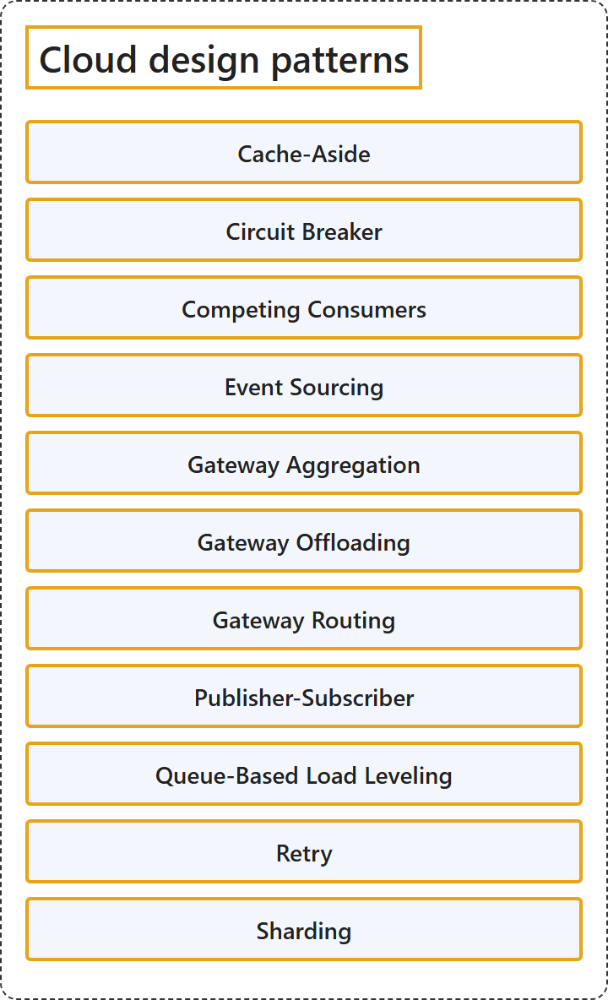

27.3 Cloud Design Patterns
Classification

Glossary
| Term | Definition | 中文翻译 | Source |
|---|---|---|---|
| Cache-Aside 缓存端 |
"Load data on demand into a cache from a data store." | 按需加载数据到缓存中，数据来自数据存储。 | Microsoft, 2026, "Catalog of patterns" table, "Cache-Aside" row |
| Circuit Breaker 断路器 |
"Handle faults that might take a variable amount of time to fix when an application connects to a remote service or resource." | 处理修复所需时间可能不确定的故障，这类故障发生在应用程序连接到远程服务或资源时。 | Microsoft, 2026, "Catalog of patterns" table, "Circuit Breaker" row |
| Competing Consumers 竞争使用者 |
"Enable multiple concurrent consumers to process messages that they receive on the same messaging channel." | 让多个并发使用者能够处理消息，这些消息来自同一个消息通道。 | Microsoft, 2026, "Catalog of patterns" table, "Competing Consumers" row |
| Event Sourcing 事件溯源 |
"Use an append-only store to record a full series of events that describe actions taken on data in a domain." | 使用仅追加存储来记录一系列完整的事件，这些事件描述对某个域中数据执行的操作。 | Microsoft, 2026, "Catalog of patterns" table, "Event Sourcing" row |
| Gateway Aggregation 网关聚合 |
"Use a gateway to aggregate multiple individual requests into a single request." | 使用网关，把多个单独的请求聚合为一个请求。 | Microsoft, 2026, "Catalog of patterns" table, "Gateway Aggregation" row |
| Gateway Offloading 网关卸载 |
"Offload shared or specialized service functionality to a gateway proxy." | 把共享或专用的服务功能卸载到网关代理。 | Microsoft, 2026, "Catalog of patterns" table, "Gateway Offloading" row |
| Gateway Routing 网关路由 |
"Route requests to multiple services by using a single endpoint." | 把请求路由到多个服务，使用的是单个终结点。 | Microsoft, 2026, "Catalog of patterns" table, "Gateway Routing" row |
| Publisher-Subscriber 发布服务器-订阅服务器 |
"Enable an application to announce events to multiple consumers asynchronously, without coupling senders to receivers." | 让应用程序能够异步地向多个使用者发布事件，而不把发送方和接收方耦合在一起。 | Microsoft, 2026, "Catalog of patterns" table, "Publisher-Subscriber" row |
| Queue-Based Load Leveling 基于队列的负载均衡 |
"Use a queue that creates a buffer between a task and a service to smooth intermittent heavy loads." | 使用队列，在任务和服务之间创建缓冲区，以平滑间歇性的重负载。 | Microsoft, 2026, "Catalog of patterns" table, "Queue-Based Load Leveling" row |
| Retry 重试 |
"Enable applications to handle anticipated temporary failures by retrying failed operations." | 让应用程序能够处理预期的暂时性故障，方法是重试失败的操作。 | Microsoft, 2026, "Catalog of patterns" table, "Retry" row |
| Sharding 分片 |
"Divide a data store into a set of horizontal partitions or shards." | 把数据存储划分为一组水平分区或分片。 | Microsoft, 2026, "Catalog of patterns" table, "Sharding" row |
References
- Microsoft. (2026, June 3). Cloud design patterns. Azure Architecture Center. https://learn.microsoft.com/en-us/azure/architecture/patterns/